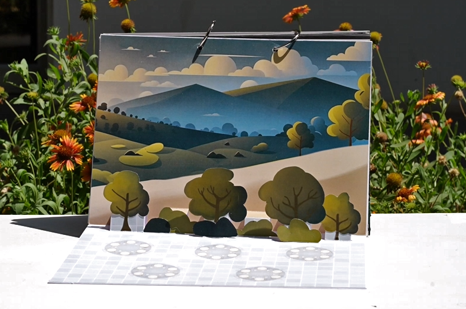
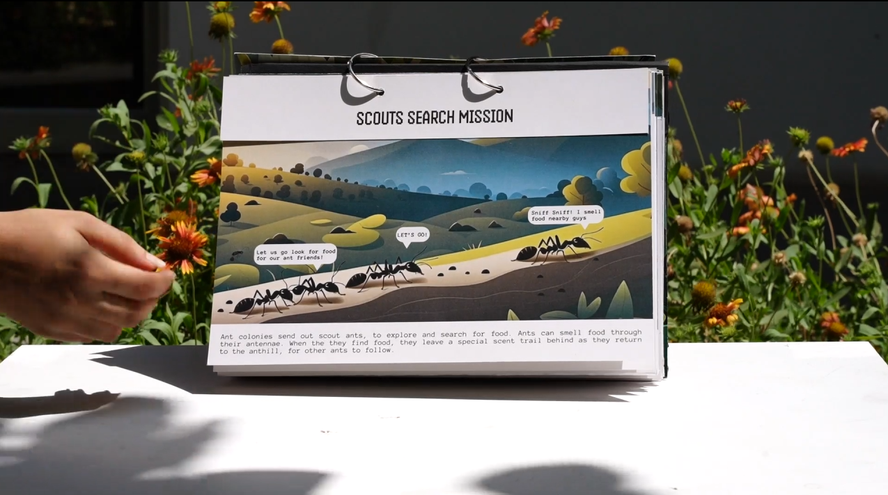
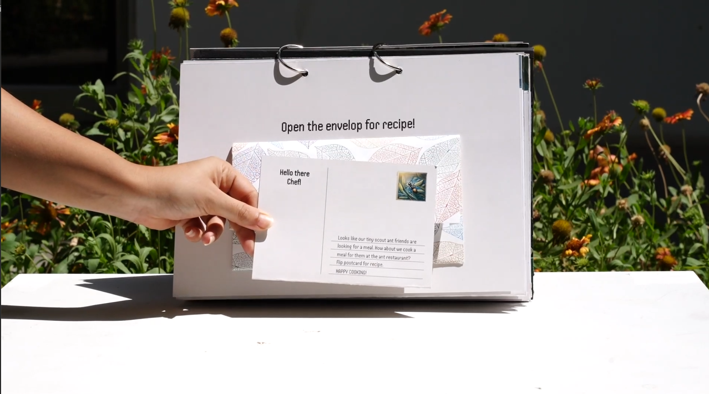
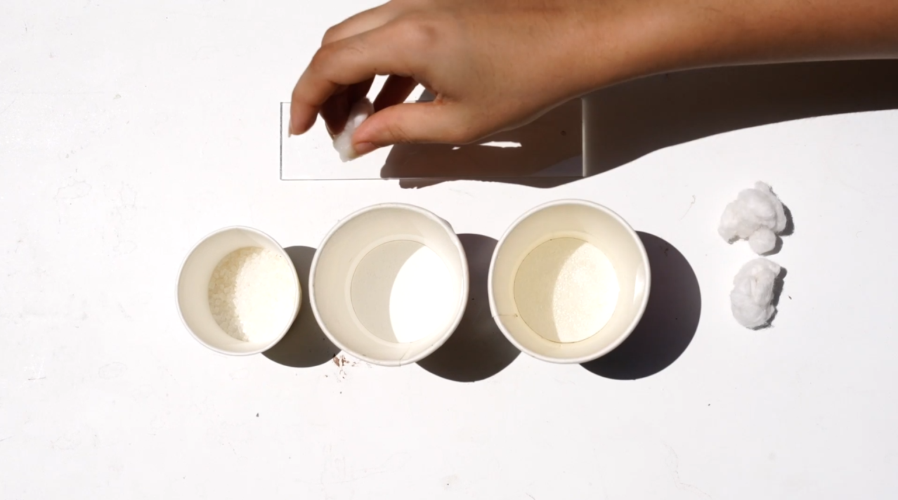
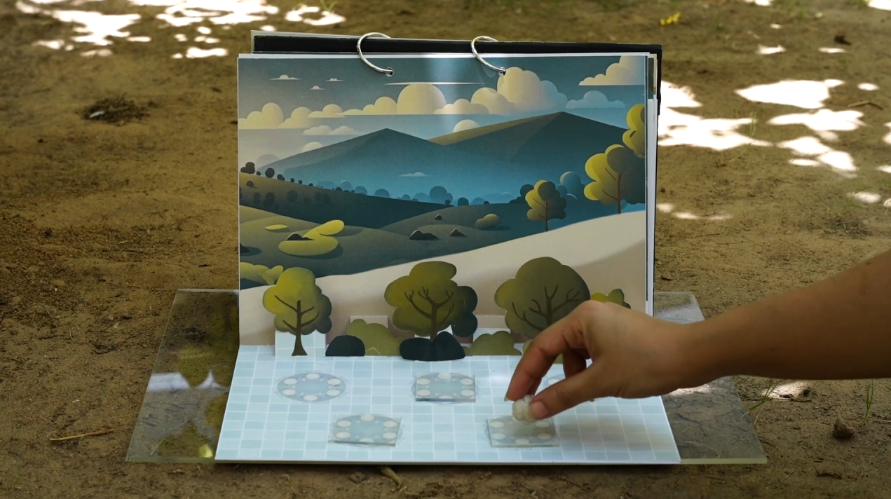
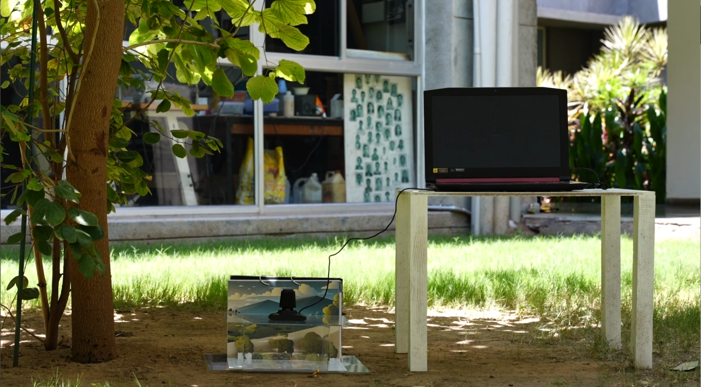
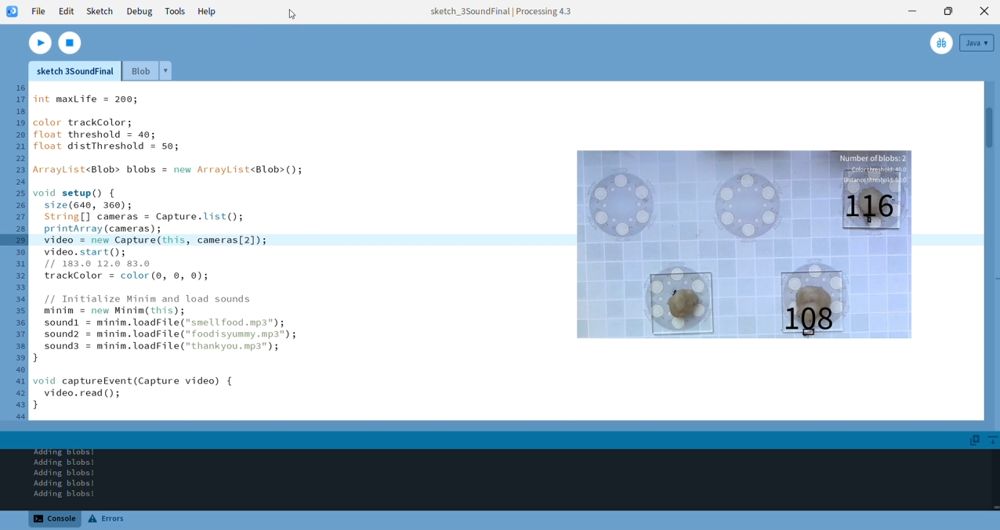

Interspecies Interactions
The Artifact is a play-based interaction between children and ants to foster empathy for ants amongst children. It consists of a pop-up book with chapters about ant behaviour, recipes to feed the ants and restaurant setups that can be placed outdoors.
Through its design, the restaurant questions non anthropocentricity in the design process and explores the boundaries of non-human centric interaction design.

* Tiny Diner Pop-Up Book.

* Restaurant setup for feeding ants.
The problem
The problem stems from children's perception of insects. Their lack of empathy toward invertebrates is driven by the negative attitudes adults around them hold toward insects, compounded by the fact that invertebrates lack the familiar, appealing features that other mammals possess. [1]
Design Process
The design process consisted of research, analysis and design methods that aimed towards continuous divergence and convergence:
- Understanding the problem space
- Exploring psychological mechanisms behind empathy formation[2]
- Using non-anthropocentric methods to conduct primary studies for understanding ant behaviour
- Creating a solution framework
- Rapid prototyping and iteration to make the final artifact
Non Anthropocentric Research
To design an artifact that could truely foster interspecies interaction, it was important to understand the foraging patterns of ants. This was done by observing the ant participants in their natural habitat i.e. near an anthill ensuring that no activities are done by the researcher that might provoke anxiety amongst the ants. To achieve this, an ethical framework was created after consulation with an insect specialist who understood how the ant colony worked, along with its heirarchies and role of each indivdual ant within the anthill.
The Artifact
The final artifact was created after testing several prototypes.






Project Details
For more details, contact the author.
footnotes:
1. Bugs, butterflies, and spiders: Children's understandings about insects. Daniel P. Shepardson (2010)
2. Moral Boundaries: A Political Argument for an Ethic of Care. Joan Tronto (1993)
3. Biophilia: Edward O. Wilson